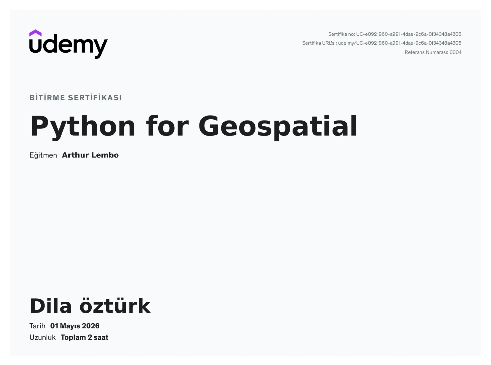
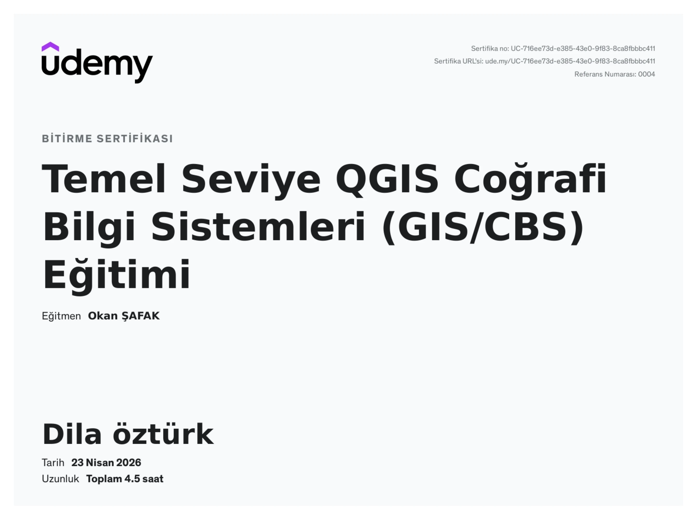
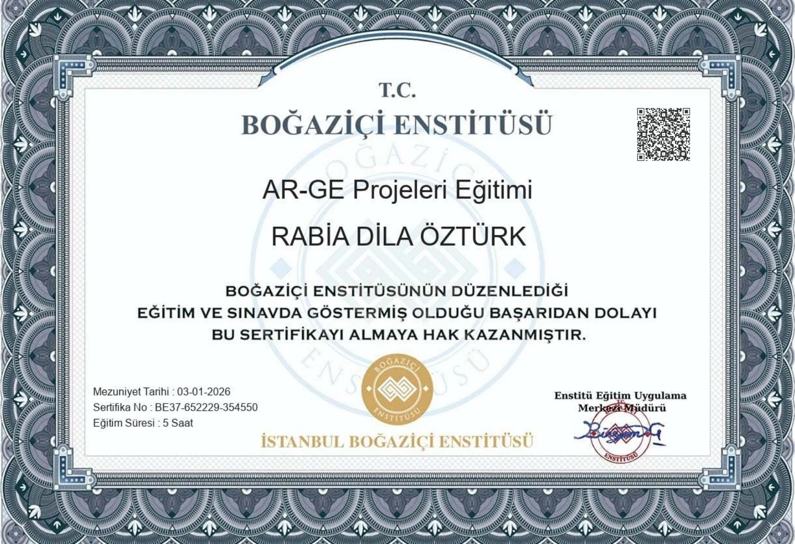
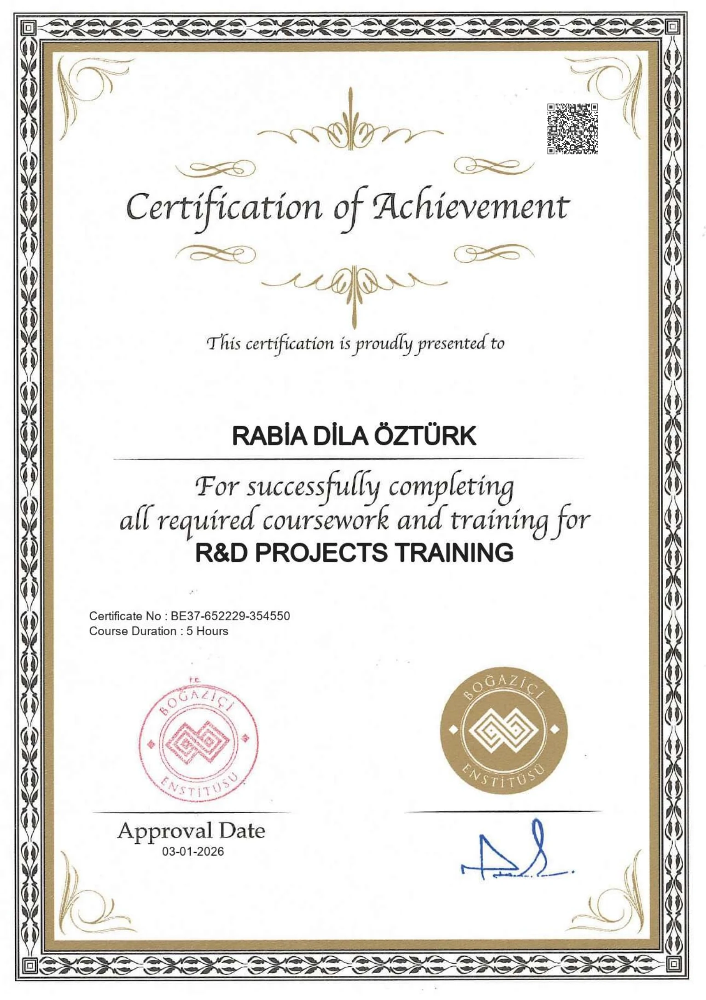
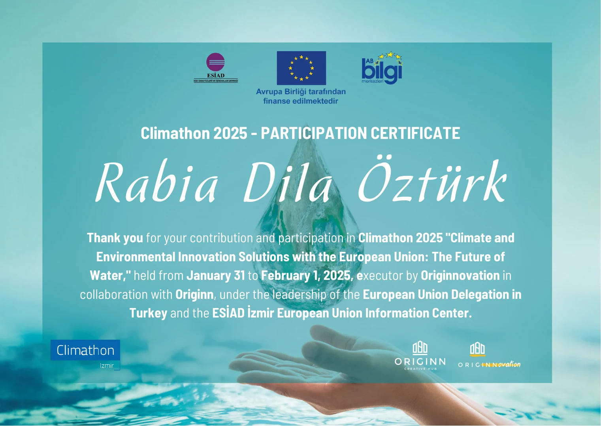
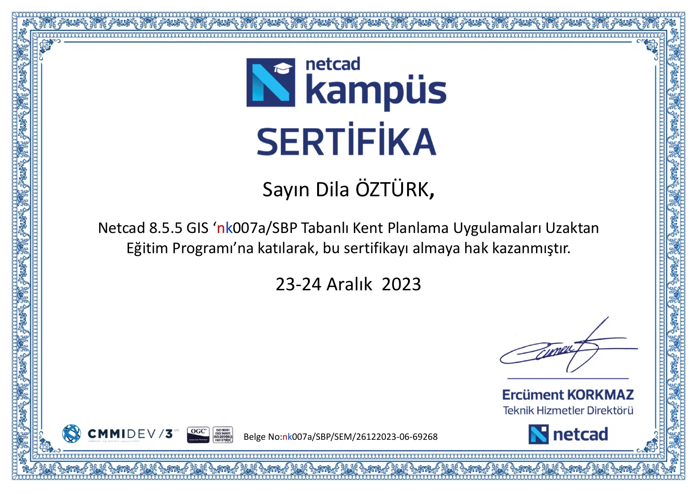
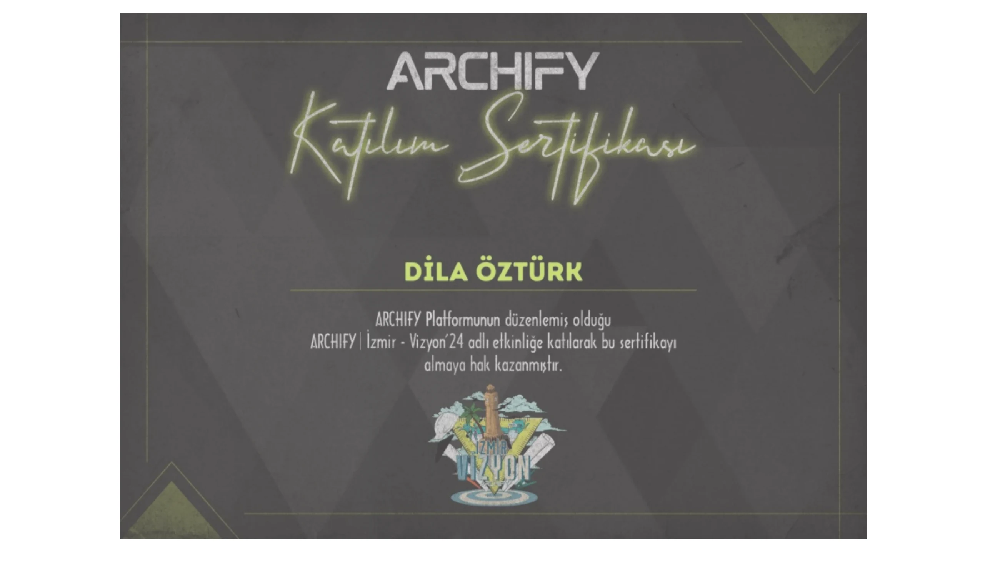

Veri üretimi
Saha, açık kaynak ve uydu verilerinden analiz edilebilir mekânsal veri setleri.
Rabia Dila Öztürk · Şehir · Veri · Teknoloji
Şehir Plancısı · Spatial Data Analyst · Veri Üreticisi
Mekânsal veriyi üretiyor, analiz ediyor ve erişilebilir, sürdürülebilir, insan odaklı kent kararları için görünür hale getiriyorum.
Kariyer rotası
Şehir ve bölge planlama eğitimimi Coğrafi Bilgi Sistemleri, mekânsal veri analizi ve dijital üretim araçlarıyla birleştiriyorum. Kararların sezgi kadar veriye de dayanması gerektiğine inanıyorum.
Saha, açık veri ve uzaktan algılama kaynaklarından mekânsal veri üretiyor; erişilebilirlik, hareketlilik ve çevresel göstergeleri CBS tabanlı analizlerle karar süreçlerine dönüştürüyorum.
GitHub profilimSaha, açık kaynak ve uydu verilerinden analiz edilebilir mekânsal veri setleri.
Erişilebilirlik, hareketlilik ve çevresel gösterge analizleri.
Dijital ikiz ve şehir simülasyonu odaklı model üretimi.
Dokuz Eylül Üniversitesi · Mimarlık Fakültesi
Şehir ve Bölge Planlama lisans eğitimimde planlama stüdyolarını; CBS, mekânsal analiz, erişilebilirlik ve 3B kent modelleme araçlarıyla bir araya getirdim.
Akademik görünüm
Mezuniyet not ortalaması
2,72 / 4,00 · doğrulanmış akademik bilgi17 Temmuz 2025 tarihinde Şehir ve Bölge Planlama lisans programını tamamladım.
Lisans döneminde görev aldığım iki ayrı TÜBİTAK projesi.
Not gelişimi
Stüdyo jürilerinde BB ile başlayan başarı çizgisi, BA seviyesinin ardından bitirme jürisinde AA notuna ulaştı.
Çalışma odağı
Planlama kararlarını veriyle sınayan, mekânı hem iki hem üç boyutlu okuyabilen bir üretim yaklaşımı.
Araştırma, analiz, planlama ve teknik geliştirmeyi aynı süreçte buluşturuyorum.
ORALL Şehircilik ve Mimarlık Ofisi · İzmir
Dört proje tesliminde görev aldım; güzergâh ve ulaşım danışmanlık raporları hazırladım, SPSS ile toplu taşıma seyahat modelleri geliştirdim ve planlama kararlarını dava dosyaları kapsamında değerlendirdim.
T.C. Çekmeköy Belediyesi · İstanbul
Plan tadilatı, 18. madde uygulaması, DOP hesabı, saha çalışmaları ile mevzuat ve yönetmelik incelemelerinde görev aldım.
Dokuz Eylül Üniversitesi · Mimarlık Fakültesi
Planlama stüdyoları, CBS, mekânsal analiz, erişilebilirlik ve 3B şehir modelleme odaklı çalışmalar yürüttüm.
Analiz paftalarından canlı haritalara uzanan seçili veri ve planlama çalışmaları.
Çalışma coğrafyası
Haritadaki vurgulu illerden birini seçerek o kentteki çalışma deneyimimi ve ürettiğim projeleri keşfet.
Mekânsal analiz · Planlama · Araştırma
Kentsel ısı adası, yaya gölgelenmesi ve Selçuk planlama analizlerinin yanında profesyonel şehir planlama çalışmalarını yürüttüğüm ana çalışma alanı.
Sürükle veya yön tuşlarını kullan
CBS, yazılım, araştırma ve iklim odağındaki eğitim ve programlar.
Udemy · Bitirme sertifikası
Udemy · Eğitim sertifikası
İstanbul Boğaziçi Enstitüsü
Proje yürütücüsü · Destek ve başarı belgesi
İklim ve çevresel inovasyon · Katılım sertifikası
Kent planlama uygulamaları eğitim programı
Belge arşivi







Yeni bir proje veya iş birliği için